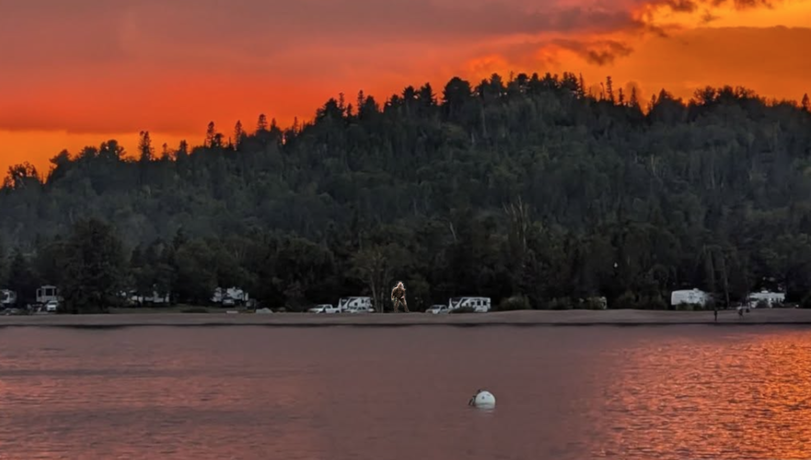

Grand Marais Minnesota
WTIP GM News
Grand Marais MN Weather
Live Grand Marais Cam
MySistersPlace GM,MN
Twincities MN
Twincities MN Weather
White Bear Lake
--->
TwinCities Cams
reddit/r/Twincities
Duluth MN
Duluth MN Weather
Duluth Minnesota Cam Aerial Bridge
reddit/r/Duluth
Bemidji MN
Bemidji MN Wx
Bemidji Minnesota Cams
reddit/r/Bemidji
National Weather
KSTP Weather
KSTP News
Max Velocity weather
Weather Decoded
Random National Sites
Woodbridge,VA Weather
NYC live Cam
Washington DC
Whitehouse CAM
World Cams
Live World Cams
Paris France
ITEM

Return